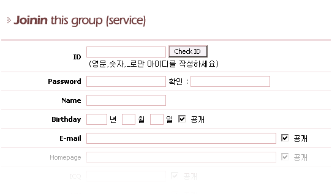
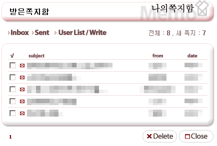
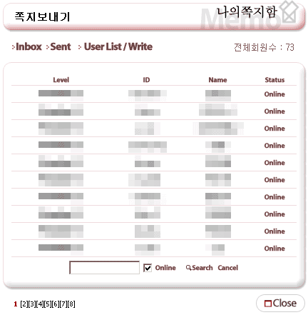

|
회원 가입/ 쪽지 사용/ 회원접속 현황 보기 2. 3가지 메뉴를 그냥 한번에 소개하겠습니다. 2. 제로보드에서 관리자가 회원가입을 받을시에 회원가입 버튼이 나타납니다. 2. 만약 제로보드에서 외부로그인을 사용하지 않는다면 게시판 상단에 나타납니다. 2. - 회원 가입  2. - 위의 그림은 회원가입창의 일부입니다. 2. - 4.1 부터는 회원 아이디를 영문, 숫자 그리고 _ 글자만 사용하여야 하며 처음이 영어로 시작하고 2. - 4글자 이상이어야 하는 항목으로 바뀌었습니다. 2. - 그리고 4.1부터 가입자의 E-mail의 MX를 체크하여 실재하지 않는 이메일이면 가입을 거부합니다. 2. - 만약 관리자가 join_license.txt 파일을 만들어 놓았을 경우에는 가입약관이 나타납니다.
2. - 쪽지 2. - 제로보드는 기본적으로 가입한 회원들끼리 서로 쪽지를 보내고 받을수 있는 기능이 있습니다.  2. - 쪽지에는 받은 쪽지함/ 보낸 쪽지함이 있으며 유저 목록창을 통해서 다른 회원을 선택하여 쪽지를 2. - 보내거나 게시물에서 글쓴이의 이름을 클릭하여 쪽지를 보낼수 있습니다. 2. - 그런데 위의 쪽지함을 보면 전체가 8개인데 목록에는 5개만 있습니다. 2. - 이는 쪽지를 보낸 이가 탈퇴를 하였기 때문에 읽을수가 없는 것입니다. 2. - 일주일의 시간이 지나면 쪽지는 사라지므로 기다리시면 정상적으로 됩니다.
2. - 회원 접속 현황 보기  2. - 제로보드 4.1 부터는 기본적으로 회원/ 비회원의 현재 접속자 현황을 알수 있습니다. 2. - 회원의 경우는 현재 누가 접속해 있는지 목록을 볼수가 있습니다. 2. - 위의 그림에서 체크 여부에 따라서 On/Off 접속 회원들을 볼수 있습니다. 2. - 그런데 4.1 부터는 체크 되어 있을때에는 검색이 불가능합니다. 2. - DB의 부하를 줄이기 위해서 Off 접속회원들에 대해서만 현황을 볼수 있습니다. |